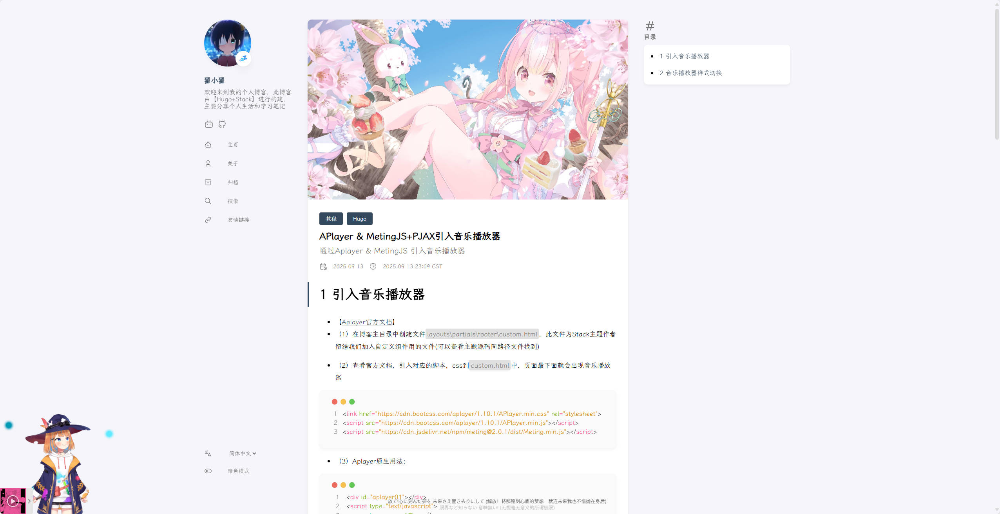

1 修改字体
-
（1）自行准备字体文件，将文件放在
assets/font目录下 -
（2）将以下代码修改并复制到
layouts/partials/footer/custom.html文件中- **字体名：**给字体命名，需要保持统一
- 字体文件名：字体文件全名，也就是xxx.ttf
1 2 3 4 5 6 7 8 9 10 11 12 13 14 15 16 17 18 19 20 21 22 23{{ $font := resources.Get "font/字体文件名" }} {{ if $font }} <style> @font-face { font-family: '字体名'; src: url('{{ $font.RelPermalink }}') format('truetype'); font-display: swap; } :root { --base-font-family: '字体名', serif; --code-font-family: '字体名', monospace; } </style> {{ else }} <!-- 字体文件未找到，使用系统默认字体 --> <style> :root { --base-font-family: serif; --code-font-family: monospace; } </style> {{ end }}这样我们的博客字体就修改好了

2 修改鼠标样式
- （1）准备好鼠标样式图片（默认，指针，文本……），图片大小建议控制在32px左右，将图片放入
static/mouse文件夹中 - （2）修改
assets/scss/custom.scss，将以下代码复制进去，根据主题按实际情况填写对应的css选择器
|
|
- （3）以下是调好的Stack主题鼠标样式
|
|
3 显示文章更新时间
- （1）在配置文件 hugo.yaml 中加入以下配置
|
|
- （2）修改github action文件
.github/workflows/xxx.yaml，在运行 hugo -D 命令的step前加入以下配置
|
|
- (3)这样通过github action提交代码时，就会读取git时间，从而更新文章的更新时间
- stack主题的文章更新时间在文章底部
- 若想在文章开头就显示更新时间，修改
layouts/partials/article/components/details.html，在指定位置引入以下代码
|
|
- 这样就会文章开头显示修改时间
更新时间的格式去 hugo.yaml 中的 params.dateFormat.lastUpdated 进行修改
4 友链、归档多列显示
- 修改
assets/scss/custom.scss文件，引入以下css样式代码
|
|
5 自定义MD引用块颜色模板
-
（1）创建文件
layouts/_default/_markup/render-blockquote-alert.html，并将以下代码复制进去
|
|
- （2）将以下代码复制进
assets/scss/custom.scss文件中
|
|
- 配色参考来源：martignoni/hugo-notice
-
（3）使用方法
- 可选项：NOTE | TIP | WARN | ERROR
- 可仿照上面css写法，自行添加新的css样式，来实现更多的可选项
1 2> [!NOTE] > 这是markdown的引用块语法效果展示
这是NOTE
这是TIP
这是WARN
这是ERROR